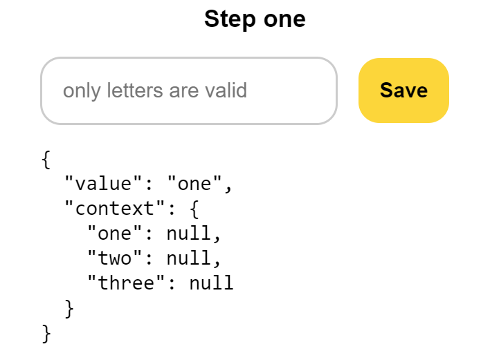
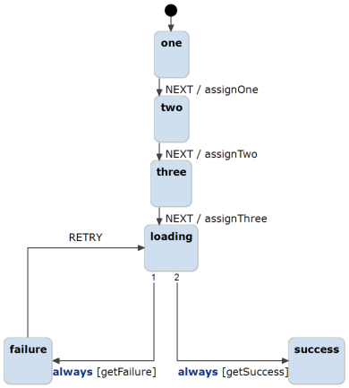

This is a simple example of the XState generator, which aims to replace the previously hand written statechart of this project with a generated one.

The behavior of the survey is defined by a simple statechart that looks as follows.

1. Install Node/JS and the npm(Node Package Manager).
2. Install the packages 'react', 'react-dom', 'xstate', '@xstate/react', 'tsc'
3. Generate a working javascript file by firstly generating a typescript file of the statechart(right-click on the the 'wizardMachine.sgen -> Generate Code Artifacts).
4. The new 'wizardMachine.ts' file can now be edited at the specified functions at the bottom of the file.